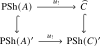

We will now combine the previous results to show that the presheaf category \(\PSh(A)\) of a small category \(A\) is the free completion of \(A\) under small colimits.
Theorem 12.8.1 (Kan). Let \(A\) be a small synthetic category and \(C\) any synthetic category with small colimits. For each functor \(u\colon A\to C\), there is a functor that commutes with small colimits \[ Lu_!\colon\PSh(A)\to C \] equipped with a canonical identification \[ Lu_! \circ h_A \simeq u \] of functors from \(A\) to \(C\). Furthermore, if \(C\) is locally small, the functor \(Lu_!\) is left adjoint to the functor \[ u^*h_C\colon{C}\to\PSh(A)\ , \quad y\mapsto\Hom_C(u(-),y)\, . \]
Proof
We choose a universe of large animae \(\An'\) and
we write \(\PSh(D)'=\Fun(D\catop,\An')\) for the category of
functors from a category \(D\) with values in \(\An'\).
The functor
\[
u_!\colon\PSh(A)'\to\PSh(C)'
\]
commutes with (small) colimits (being a left adjoint). We have a commutative square of the following form.

If furthermore \(C\)is locally small then Lemma 12.7.5 tells us that \(u_!\) is a left adjoint to \(u^*\). Since \(L\) is a left adjoint to the small Yoneda embedding, the composite \(Lu_!\) is a left adjoint to \(u^* h_C\).
Corollary 12.8.2. Let \(A\) be small and let \(C\) with small colimits. Then a functor \[ \Phi\colon \PSh(A)\to C \] commutes with small colimits if and only if there is an isomorphism of the of the form \(\Phi\simeq Lu_!\) for \(u := \Phi \circ h_A\). In particular, if furthermore \(C\) is locally small, the property for a functor \(\Phi\) as above to commutes with small colimits is equivalent to the property of having a right adjoint.
Proof
For \(u = \Phi h_A\), the canonical adjunction \[ u_! \colon \PSh(A)' \rightleftarrows \PSh(C)'\noloc u^* \, . \] induces an adjunction of the form: \[ u_!\colon \Fun(\PSh(A), \PSh(A)') \rightleftarrows \Fun(\PSh(A),\PSh(C)')\noloc u^*\, . \] For a presheaf \(F\colon A\catop \to \An\) we have \[ \Hom(h\catop_A(-),F) = F \] by the Yoneda lemma. Then \(\Phi\) induces a natural transformation \[ \Hom_{\PSh(A)}(-,-) \to \Hom_C(\Phi\catop(-),\Phi(-)), \] and hence we obtain a canonical homomorphism \[ F = \Hom(h_A(-),F) \to \Hom_C(\Phi h_A(-), \Phi(F)) = \Hom_C(u(-),\Phi(F)) = u^*h_C\Phi(F), \] which is functorial in \(F\). In other words, we have constructed a natural transformation \[ \iota \to u^*h_C \Phi(-) \] where \(\iota\colon\PSh(A)\hookrightarrow\PSh(A)'\) denotes the canonical full embedding. By passing to adjoints, this yields a canonical morphism \[ u_! \to h_C\, \Phi. \] Applying the functor \(L\) and using that \(L\, h_C\simeq\id_C\), this yields a canonical map \[ Lu_!\to \Phi \] inducing the identity of \(u\) when composing with \(h_A\). Therefore, we know that the map \(Lu_!(F) \to \Phi(F)\) is an isomorphism whenever \(F\) is a representable presheaf. But since both \(Lu_!\) and \(\Phi\) commute with colimits, the collection of objects on which the map \(Lu_!\to \Phi\) is an isomorphism is closed under colimits in \(\PSh(A)\), and so by Corollary 12.6.4 it is an equivalence for an arbitrary presheaf \(F\).
The last assertion comes from the fact that any functor (isomorphic to a functor) of the form \(Lu_!\)
Taking \(A=*\) in Theorem 12.8.1, an object \(y\) of a category \(C\) admitting small colimits gives a colimit-preserving functor \(\overline{y}\colon\An\to C\). For a small anima \(s\), we write \[ s\otimes y:=\overline{y}(s)=\colim_s y \] and call this the tensor of \(y\) by \(s\). Thus \(s\otimes y\) is the colimit of the constant diagram on \(y\) indexed by \(s\).
Remark 12.8.3. Local smallness is necessary for the right-adjoint assertion in Corollary 12.8.2. Indeed, if every colimit-preserving functor \(\An\to C\) has a right adjoint, then, for each object \(y\) of \(C\), the tensor functor \(s\mapsto s\otimes y\) has a right adjoint \(R\colon C\to\An\). Hence there is a natural equivalence \[ \Hom_C(s \otimes y, x) \simeq \Hom_{\An}(s,R(x)). \] In particular, taking \(s\) to be the terminal anima we see that \(\Hom_C(y,x) \simeq \Hom_{\An}(*,R(x)) = R(x)\), and hence \(C\) is locally small.
Notation 12.8.4. Given two categories \(C\) and \(D\), we write \(\Fun_!(C,D)\) for the full subcategory of \(\Fun(C,D)\) spanned by the functors from \(C\) to \(D\) that preserve small colimits. We also write \(\Fun^L(C,D)\) for the full subcategory of \(\Fun(C,D)\) spanned by functors that admit a right adjoint. There are canonical full embeddings of the form: \[ \Fun^L(C,D)\hookrightarrow\Fun_!(C,D)\hookrightarrow\Fun(C,D)\, . \]
Corollary 12.8.5. Let \(A\) be as small synthetic category and \(C\) a synthetic category with small colimits. Then the Yoneda embedding \(h_A\colon A\to\PSh(A)\) induces an equivalence: \[ \Fun_!(\PSh(A),C)\iso\Fun(A,C)\, . \] In particular, the rule assigning to a functor \(u\colon A\to C\) the functor \(Lu_!\) is itself a functor.
Furthermore, if \(C\) is locally small, then we have \[ \Fun^L(\PSh(A),C)=\Fun_!(\PSh(A),C)\, . \]
Proof
The last assertion is a reformulation of the last assertion of Corollary 12.8.2.
We observe that there is a canonical identification of the form: \[ \Fun_!(\PSh(A),\Fun([1],C))=\Fun([1],\Fun_!(\PSh(A),C))\, . \] By virtue of Corollary 6.3.9 it suffices thus to check that the Yoneda embedding \(h_A\colon A\to\PSh(A)\) induces an equivalence: \[ \Fun_!(\PSh(A),C)^\simeq\iso\Fun(A,C)^\simeq\, . \] This follows immediately from the first parts of Theorem 12.8.1 and of Corollary 12.8.2.